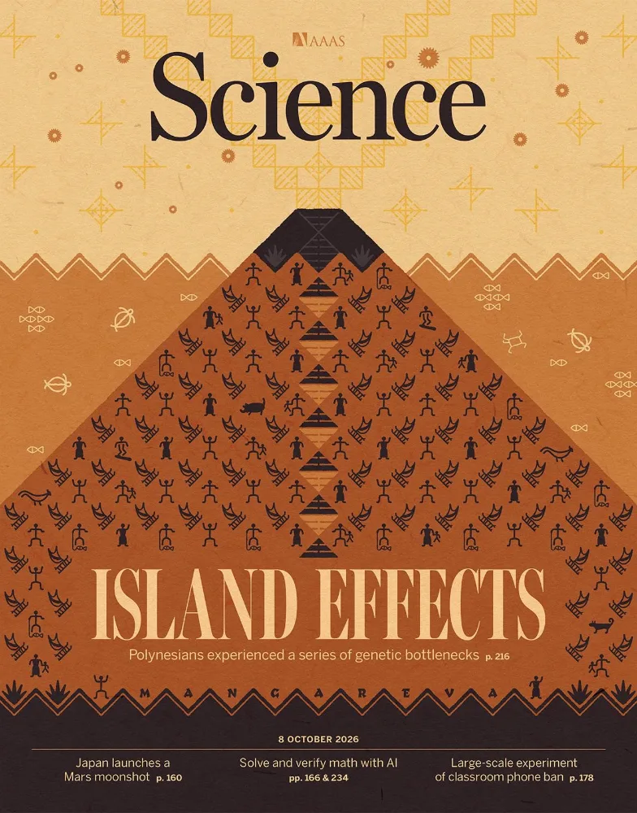

2026.10
Our paper has been published in Science.
“Volatile eutectics to tailor crystallization for perovskite optoelectronics”, Science 394 (6820), 228–233 (2026)
- 문화일보 성균관대 신성식 교수팀, 초저결함 반도체 박막 ‘휘발성 공융 혼합물’ 세계 최초 개발
- 한국강사신문 성균관대학교 신성식 교수팀, 초저결함 페로브스카이트 반도체 박막 개발…태양전지·LED 동시 구현
- 뉴스티앤티 성균관대, 결함 대폭 줄인 페로브스카이트 박막 개발
기사 6건 더보기
- 핀포인트뉴스 성균관대 신성식 교수팀, 초저결함 페로브스카이트 개발… 태양전지·LED 동시 구현
- 이데일리 성균관대, 초저결함 반도체 박막 개발…태양전지·LED 동시 구현
- 이뉴스투데이 성균관대 신성식 교수팀, 태양전지와 LED를 하나로, 차세대 반도체 기술 개발
- 스마트경제 하나의 소자로 전기를 만들고 빛까지 낸다…공융 현상 기반 ‘초저결함 페로브스카이트 반도체’ 세계 최초 개발
- 로이슈 성균관대 신성식 교수팀, 페로브스카이트 반도체 박막 개발
- 에스프레스(성대뉴스) 신성식 교수팀, 공융 현상으로 초저결함 반도체 박막 개발… 태양전지·LED 동시 구현